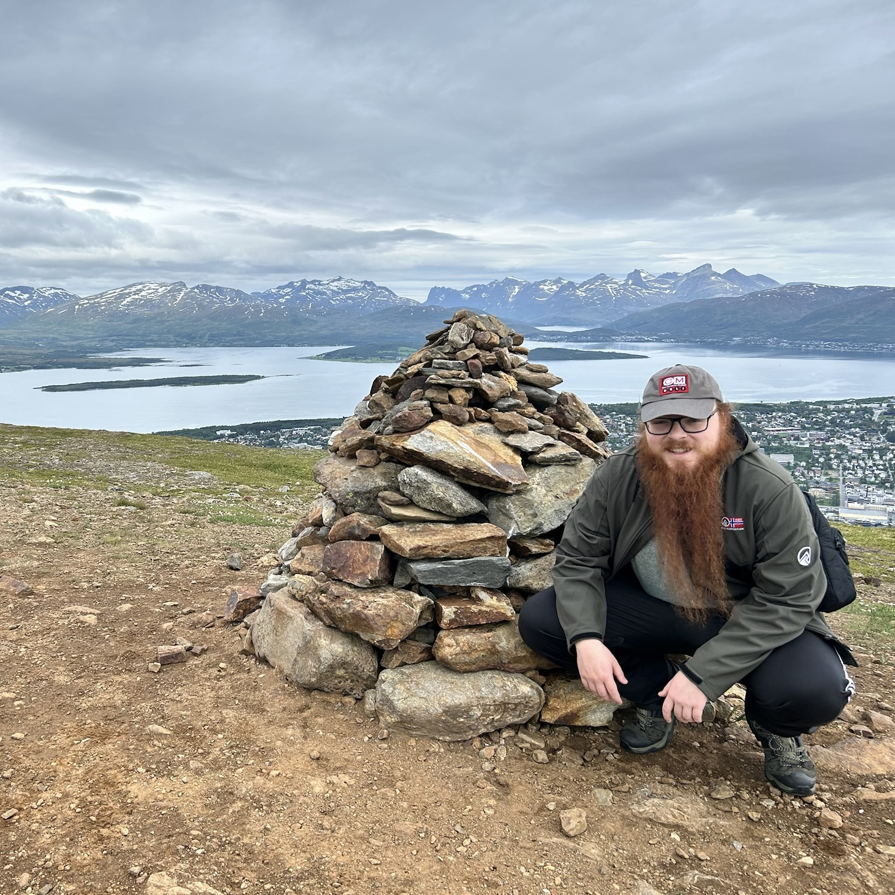

ITIS 3135 Introduction
Noah J Harden at Tromsø's Tromsdalstinden Mountain Peak
- Personal Background: Hello everyone, My name is Noah J Harden! I’m doing a dual major in Computer Science (cybersecurity) and German language. I grew up in both Charlotte, NC and Germany but for the last 10 years I have considered Charlotte my home. I love trading playing card games such as Magic: the Gathering and Flesh and Blood.
- Professional Background: Currently a TA for ITSC 1212 and 1213. I’ve had an internship at the Physics Department at University of Bonn, Germany. Previously worked with ‘Playing for Others’ a Charlotte based nonprofit.
- Academic Background: I am a full time student at UNCC majoring in both Cybersecurity and German Language. I have full certifications from the German government for speaking the language abroad such as the DSD II and the C2 Certificate. I have been a teacher for a german saturday school and I am currently an IA for ITSC 1213 under Dr. Adam Whaley.
-
Laptop & Working Environment:
- Laptop: Lenovo Legion 7i, Windows 11
- Working Environment: Student Union or apartment
- Courses:
- ITSC 3146 - Intro Oper Syst & Networking: This class is key in understanding my concentration, which is Cybersecurity.
- ITSC 2175 - Logic and Algorithms: Math class necessary for understanding computer science concepts
- ITIS 3135 - Front-End Web Application Development: I took this class as something to be compatible with a backend class I’m taking.
- STAT 2122 - Intro to Prob & Stat: Another math class necessary for understanding computer science concepts.
- ITSC 3160 - Database Design and Implementation: A backend class needed for the cybersecurity concentration.
- Uncle Iroh